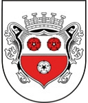

Antavla
32704198040 Burkhard III von Moosburg
Blev högst 60 år.

Far:
Burkhard I von Moosburg
Mor:
von Diessen (1037 - 1137)
Född:
1073 Tyskland.
Död:
1133 Tyskland.
Barn med ?
Barn:
Burkhard IV von Moosburg (1101 - 1138)
Personhistoria
Årtal
Ålder
Händelse
1073
Födelse 1073 Tyskland
1101
Sonen
16352099020 Greve Burkhard IV von Moosburg
föds 1101 Tyskland
1125?
Barnbarnet
8176049510 Greve Burkhard V von Moosburg
föds omkring 1125 Moosburg, Tyskland
[1]
1133
Död 1133 Tyskland
Källor
[1]
Alex Moes